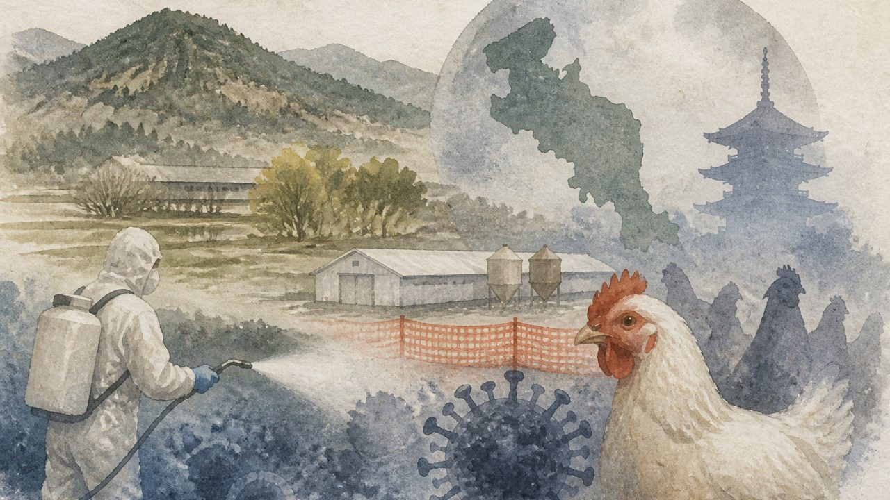

米株が急落 S&P500は6日続落
11月19日の米株は大きく下げた。S&P500は7,175.83（-2.02%）、ダウは49,097.06（-2.19%）、ナスダックは23,879.20（-2.25%）で引けた。AI株の調整と利上げ観測が重なった形だ。
AIカンパニー リサーチ新聞
公募価格83ドル比で17%高、寄り付き後は伸び悩む
Anthropicは11月19日にNasdaqへ上場した。初値は111.50ドルで、終値は97.17ドルとなり、公募価格の83ドルを17%上回って取引を終えた。
初値は公募価格を大きく上回ったが、寄り付き後は値を下げた。初日は上昇と場中からの失速が同居する展開だった。
初値111.50ドルはReuters配信のYahooでも確認されている。時価総額は媒体ごとに算定基準が異なるため、ここでは示さない。
報道は11月19日16:08（米東部時間）時点のForbesの二次報道に基づく。
11月19日の米株は大きく下げた。S&P500は7,175.83（-2.02%）、ダウは49,097.06（-2.19%）、ナスダックは23,879.20（-2.25%）で引けた。AI株の調整と利上げ観測が重なった形だ。

Googleが公式ブログでGemini 4 Neonを発表した。100万トークンの入力に対応し、料金は入力3ドル、出力15ドル。Terminal-Bench 4.1で65.2%の成績で、これは自社申告の値だ。性能差が縮み、競争軸はコーディング性能と価格に移りつつある。

円が1ドル160円に近づいた。12月FOMCで0.25ポイントの利上げが行われる確率は約95%とされ、日米の金利差が意識されている。円の水準は単独ソースの報道に基づく。

農水省は、京都府亀岡市で国内初となるH5N9亜型の高病原性鳥インフルエンザを確認したと発表した。遺伝子解析で確定した。鶏肉や鶏卵を食べて人に感染するリスクは現状ないとしている。年末の鶏卵供給と防疫対応が焦点になる。

Cloudflareが抽出モデルClairicをオープンウェイトで公開した。27Bとflash 9Bの2種類で、入力100万トークンあたり0.24ドル、0.10ドル。12月1日までは両方0.10ドルとなる。エッジ基盤が特化小型モデルで開発者を呼び込む狙いだ。

SnapchatはClaude Code、Cursor、Codexなどから、文章でARレンズを作って公開できるEasy Lens CLIを発表した。コーディングAIが、開発者でないクリエイターの入口になりつつある。
xAIがカリフォルニア州のAI訓練データ開示法に異を唱えた控訴審の口頭弁論が11月18日にあり、第9巡回区の判事は差し止めの申立てに懐疑的な姿勢を見せた。

国連人権高等弁務官は、AIが中世的なやり方で治められていると批判した。

網膜インプラントPRIMAを手がけるScience Corpが、シリーズDで4億ドルを調達した。
きょうはAnthropicの上場初日と、米株の急落が同じ日に重なった。事実として、初値は公募価格を大きく上回ったが、終値は初値より下で引け、S&P500は6日続落となった。一方、GoogleのGemini 4 Neonは100万トークン対応で価格も示され、競争は性能差から価格へ移りつつある。見立てとして、AI関連株は期待と調整が交錯する局面にあるのかもしれない。ただ、時価総額は媒体ごとに算定が異なる。数字の置き方には注意したい。